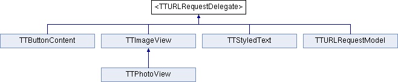

<TTURLRequestDelegate> Protocol Reference
Inheritance diagram for <TTURLRequestDelegate>:

Public Member Functions | |
| (void) | - requestDidStartLoad: |
| The request has begun loading. | |
| (void) | - requestDidUploadData: |
| The request has loaded some more data. | |
| (void) | - requestDidFinishLoad: |
| The request has loaded data and been processed into a response. | |
| (void) | - request:didReceiveAuthenticationChallenge: |
| Allows delegate to handle any authentication challenges. | |
| (void) | - request:didFailLoadWithError: |
| The request failed to load. | |
| (void) | - requestDidCancelLoad: |
| The request was canceled. | |
Member Function Documentation
| - (void) requestDidFinishLoad: | (TTURLRequest *) | request | [optional] |
The request has loaded data and been processed into a response.
If the request is served from the cache, this is the only delegate method that will be called.
| - (void) requestDidStartLoad: | (TTURLRequest *) | request | [optional] |
The request has begun loading.
This method will not be called if the data is loaded immediately from the cache.
- See also:
- - requestDidFinishLoad:
| - (void) requestDidUploadData: | (TTURLRequest *) | request | [optional] |
The request has loaded some more data.
Check the totalBytesLoaded and totalBytesExpected properties for details.
The documentation for this protocol was generated from the following file:
- Three20Network/Headers/TTURLRequestDelegate.h